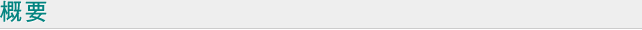
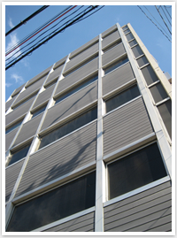
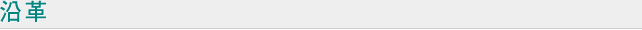

HOME > 会社情報

| 商号 | 株式会社山田為商店 |  |
|---|---|---|
| 設立 | 1949年10月21日 | |
| 資本金 | 2400万円 | |
| 代表者 | 代表取締役 岩間良子 | |
| 役員 |
取締役会長 岩間市治 取締役 岩間教子 |
|
| 営業品目 |
|
|
| 従業員 | 社員 17名 | |
| 所在地 |
〒556-0002 大阪市浪速区恵美須東1丁目22-16番地 TEL:06-6641-7551～4 FAX:06-6641-7559 E-Mail:info@yamatame.com |
|
関連会社
| 商号 | 山田為（香港）有限公司 |
|---|---|
| 設立 | March 01, 1999. |
| 所在地 |
Unit 6, 12/F, Westin Centre,26 Hung To Road, Kwun Tong, Kowloon, Hong Kong. TEL:(852)2866-4963 FAX:(852)2866-2755 E-Mail:info@yamatame.com.hk |
| 資本金 | HK$300,000.00 |

| 昭和22年 | 大阪市浪速区恵美須町1丁目1番地にて営業開始 |
|---|---|
| 昭和24年 | 資本金五拾萬円にて会社を設立 |
| 昭和26年 | 業務拡大により大阪市浪速区恵美須町2丁目90番地に倉庫を置く。 |
| 昭和35年 | 営業領域の拡大を計り、大阪市浪速区恵美須町2丁目91に工場を建設し電気絶縁材料及び合成樹脂関係の旋盤を主体とした加工を始める。 |
| 昭和44年5月 | 現在地に六階建てビルを建築一カ所に集約する。 |
| 平成11年3月 | 電気絶縁材料の販売店として香港に現地法人山田為（香港）有限公司を開設する。 |